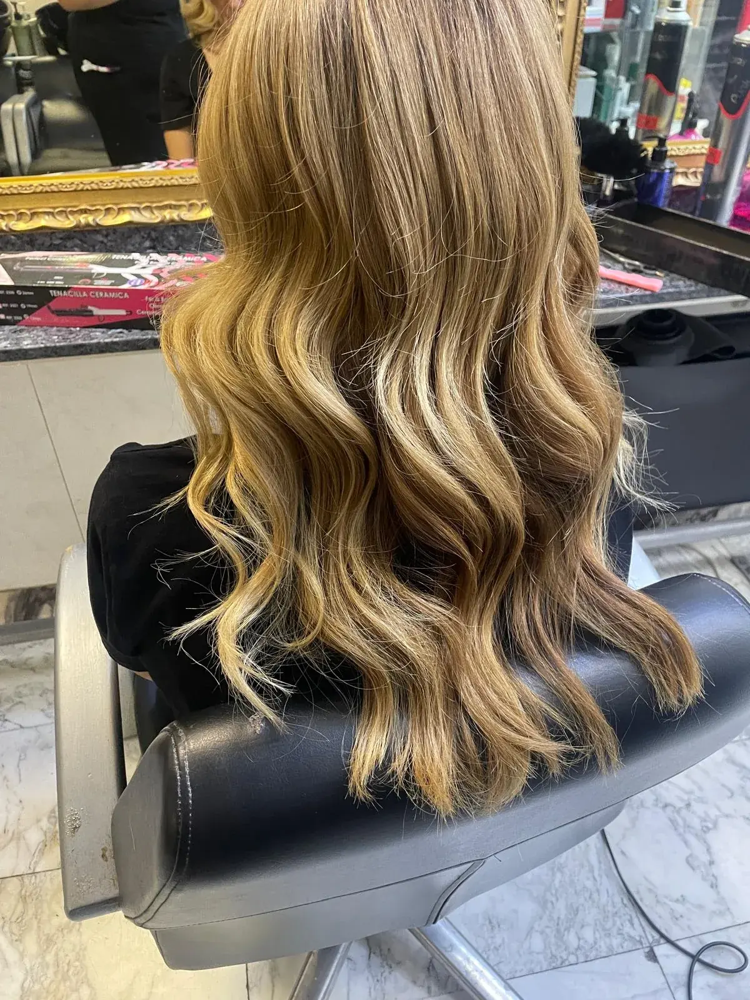

Antes
Miramos la base, trabajos anteriores, estado del cabello y referencias. Una foto ayuda; conocer tu rutina ayuda más.
Color y mechas · Vallecas
La meta no es perseguir una foto exacta: es encontrar el tono que conversa con tu piel, tu base, tus canas y el tiempo que quieres dedicarle después.
Pedir cita por teléfono ↗
La mirada de María
María lleva más de 30 años trabajando el color. Le interesan especialmente los rubios, las transiciones suaves y los resultados que no obligan a volver al salón antes de lo que la persona desea. Por eso la conversación previa importa tanto como la mezcla.
Si aparecen las primeras canas, no siempre hace falta convertir toda la melena en un color plano. Unas luces bien situadas pueden integrarlas con la base natural y suavizar el crecimiento. Si buscas un cambio intenso, también lo trabajamos: el punto de partida sigue siendo qué favorece a tu piel y cómo se comportará el tono con los lavados.
Miramos la base, trabajos anteriores, estado del cabello y referencias. Una foto ayuda; conocer tu rutina ayuda más.
Elegimos técnica y tono pensando en dimensión, brillo y mantenimiento, no solo en el resultado inmediato.
Te explicamos cómo cuidar el color en casa sin convertir el baño en una estantería de productos.
El resultado y el tiempo necesarios dependen de la base y del historial del cabello. Llámanos para contarnos tu caso.
Hablemos de tu color
Las citas se conciertan únicamente por teléfono.
Llamar al 914 77 27 37 ↗